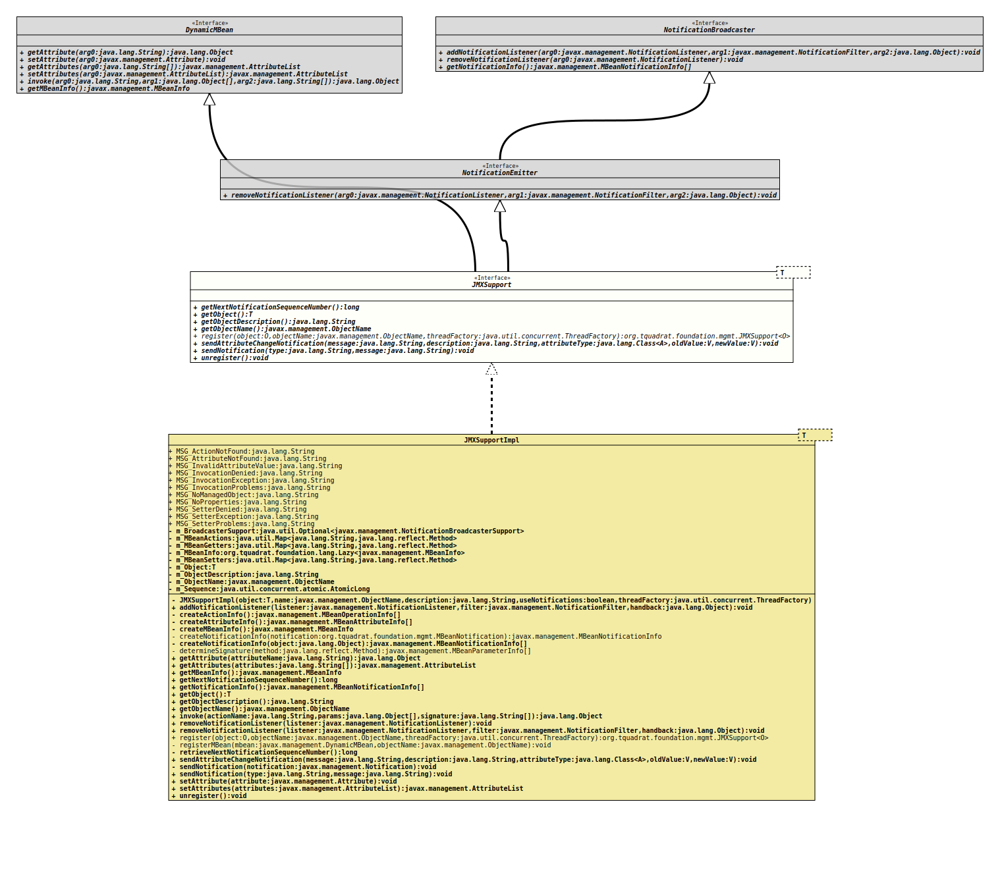

- Type Parameters:
T- The type of the managed object.
- All Superinterfaces:
DynamicMBean,NotificationBroadcaster,NotificationEmitter
- All Known Implementing Classes:
JMXSupportImpl
@ClassVersion(sourceVersion="$Id: JMXSupport.java 995 2022-01-23 01:09:35Z tquadrat $")
@API(status=STABLE,
since="0.0.1")
public sealed interface JMXSupport<T>
extends DynamicMBean, NotificationEmitter
permits JMXSupportImpl<T>
The implementations of this interface will provide a dynamic
MBean for the instrumentation of object annotated with
ManagedObject.
- Author:
- Thomas Thrien (thomas.thrien@tquadrat.org)
- Version:
- $Id: JMXSupport.java 995 2022-01-23 01:09:35Z tquadrat $
- Since:
- 0.0.1
- See Also:
- UML Diagram
-

UML Diagram for "org.tquadrat.foundation.mgmt.JMXSupport"
{kind=link}
-
Method Summary
Modifier and TypeMethodDescriptionlongReturns the sequence number that is used for the next notification.Returns the object that is instrumented by this MBean instance.Returns the object description.Returns the object name for this MBean.static <O> JMXSupport<O> register(O object, ObjectName objectName, ThreadFactory threadFactory) Registers the server with the JMX agent.<A,V extends A>
voidsendAttributeChangeNotification(String message, String description, Class<A> attributeType, V oldValue, V newValue) Sends an attribute change notification.voidsendNotification(String type, String message) Sends a simple notification with a message text.voidUnregisters the MBean from the MBeanServer.Methods inherited from interface javax.management.DynamicMBean
getAttribute, getAttributes, getMBeanInfo, invoke, setAttribute, setAttributesMethods inherited from interface javax.management.NotificationBroadcaster
addNotificationListener, getNotificationInfo, removeNotificationListenerMethods inherited from interface javax.management.NotificationEmitter
removeNotificationListener
-
Method Details
-
getNextNotificationSequenceNumber
Returns the sequence number that is used for the next notification.- Returns:
- The next sequence number.
-
getObject
Returns the object that is instrumented by this MBean instance.- Returns:
- The instrumented object.
-
getObjectDescription
Returns the object description.- Returns:
- The object description.
-
getObjectName
Returns the object name for this MBean. This is a copy of that instance that is used during registration, not the real thing. Therefore, it should be only used for reference.- Returns:
- A copy of the MBean's object name.
-
register
static <O> JMXSupport<O> register(O object, ObjectName objectName, ThreadFactory threadFactory) throws IllegalArgumentException, InstanceAlreadyExistsException, MBeanRegistrationException Registers the server with the JMX agent.
If modules are used, the registered object must be accessible for this module (
org.tquadrat.foundation.mgmt). This can be achieved easiest by opening the package with the respective class to the management module.- Type Parameters:
O- The type of the object.- Parameters:
object- The object to register with the JMX agent.objectName- The object name that is used for the object to register.threadFactory- The thread factory that is used when notifications should be sent asynchronously; can benull.- Returns:
- The MBean object that was generated as the instrumentation for the object to manage.
- Throws:
IllegalArgumentException- The object is not annotated with@ManagedObject.InstanceAlreadyExistsException- There is already a MBean with the given object name registered.MBeanRegistrationException- Problems with the registration of the MBean.
-
sendAttributeChangeNotification
<A,V extends A> void sendAttributeChangeNotification(String message, String description, Class<A> attributeType, V oldValue, V newValue) Sends an attribute change notification. The type is alwaysjmx.attribute.change.- Type Parameters:
A- The type for the attribute.V- The type for the values.- Parameters:
message- The message for this notification.description- The description for the attribute.attributeType- The type of the attribute.oldValue- The old value.newValue- The new value.
-
sendNotification
Sends a simple notification with a message text.- Parameters:
type- The type of the notification.message- The message for this notification.
-
unregister
Unregisters the MBean from the MBeanServer.- Throws:
InstanceNotFoundException- The MBean is not registered.MBeanRegistrationException- Problems with the registration of the MBean.
-